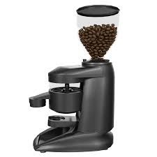

Home
About Us
Team
Services
Training
Media
Contact Us
Media

Audio Tutorial
Coffee Grinding Audio Tutorial
Video Tutorial
Coffee Grinding Video Tutorial
Your browser does not support the video element.
Youtube Tutorial
Coffee Grinding Youtube Tutorial
Copyright (c) All rights reserved.
Top